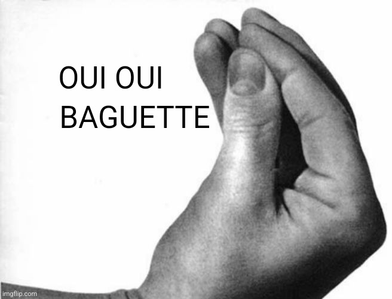

Информация об авторе
Валекжанин Владимир Сергеевич
ЭФБО-04-24
Обо мне: Я родился в Москве в 70-м на краю города. Глупость рано ударила в голову. В четыре активно ругался. Потом школа, форма, драки, клей. Так я становился сильней. Воровал деньги в раздевалке.
Навык 1
Навык 2
Навык 3
Навык 4
Мой опыт работы:
Опыт 1
Ας χρησιμοποιήσουμε το αρχαίο φαγόπυρο για zedki και ούτω καθεξής.
Ας χρησιμοποιήσουμε το αρχαίο φαγόπυρο για zedki και ούτω καθεξής.
Опыт 2
Работал воровством. Воровал и продавал.
Работал воровством. Воровал и продавал.
Опыт 3
Работал рэпером. Читал и пел.
Работал рэпером. Читал и пел.